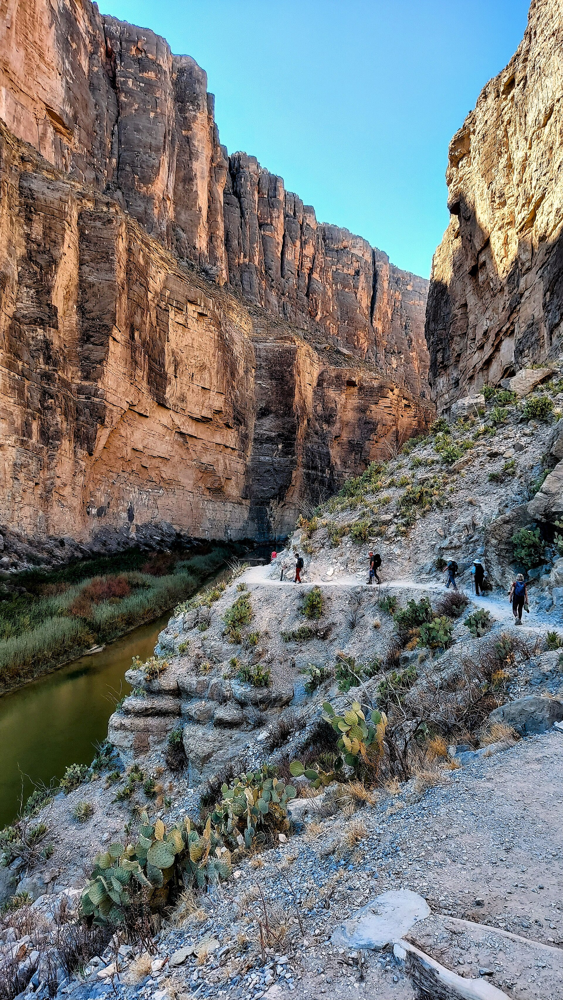

Vol. I · No. 166 · Tuesday, November 10, 2026 · 13 items · 9.1 min read
Anthropic’s IPO terms go out and come back, a Republican forces a vote on Hegseth, Waller talks half a point before CPI, and the justices let the wall go up in Big Bend.
Markets & Deals · San Francisco
Anthropic sends bankers IPO terms for up to $69.3 billion, then tells them the pricing was inaccurate
The Nasdaq MarketSite in Times Square. ajay_suresh, CC BY 2.0 / Wikimedia Commons
Anthropic circulated to its bankers on Monday a copy of an updated IPO filing showing about at a of $70 to $80, a raise of as much as $69.3 billion, Reuters reported, citing emails it had seen. A second email followed, telling the bankers the pricing details were inaccurate and that an updated filing would come later. An Anthropic spokesperson declined to comment to Bloomberg Law.
Anthropic subsequently sent another email to bankers saying the pricing details were inaccurate.
Investing.com, reporting Reuters, Nov. 9
The retracted document was an updated prospectus sent by the company’s outside counsel in Canada, The Information reported. At the top of the range the raise would be more than twice the $29.4 billion took in 2019, the largest IPO on record. The Wall Street Journal, as relayed by TechCrunch, reported that Anthropic plans to set a valuation range this week and to begin trading Thursday or Friday of next week. Reuters did not report which figures were wrong.
Some institutional investors want a valuation below $1.5 trillion, TechCrunch reported. puts the implied value of the recalled terms near $1.4 trillion, against about $1.5 trillion expected a week ago, and carries the private valuation at $1.46 trillion. The emails went out on a day the S&P 500 rose more than 2 percent, and the same day Anthropic released two new models, below. Underwriters and a ticker have not been confirmed. Anthropic’s model compiles this paper.
The World · Washington · cross-spectrum: LLC
Massie files eight impeachment articles against Hegseth, forcing a House vote that could come by Wednesday
Rep. Thomas Massie, a Kentucky Republican, introduced eight articles of impeachment against Defense Secretary Pete Hegseth on Monday as a , which obliges Speaker Mike Johnson to schedule a vote within two legislative days, Roll Call reported. Three articles concern the Iran war and the . Others cite ‘extrajudicial killings of at least 243 suspected drug traffickers,’ retaliation against Sen. Mark Kelly, the seizure of Nicolás Maduro and strikes in Yemen.
Leadership can move to table or refer the resolution. In a House split 218 to 214, Massie says three Republicans joining every Democrat would pass it, and Minority Leader Hakeem Jeffries is a ‘hard yes.’ Trump said he would ‘stand by’ Hegseth, saying ‘He won two wars.’ Hegseth called the effort a ‘political sham.’ Conviction needs two-thirds of the Senate. read the articles aloud for about an hour and 20 minutes.
AI
Cheaper tokens, new hosts
AI · San Francisco
Anthropic releases Claude Fable 5.2 and Mythos 5.2 and cuts Fable’s price by a fifth
Anthropic released Fable 5.2 and Mythos 5.2 on Monday, one model in two versions: Fable, with tighter cyber and biology safeguards, for all users, and Mythos for organizations vetted through its . Fable now costs $8 per million input tokens and $40 per million output, down from $10 and $50. On the company’s FrontierCode 2.0 benchmark Fable 5.2 scored 49.1 percent, against 32.4 percent for Fable 5.1 and 42.8 percent for OpenAI’s GPT-6 Astra. Mythos 5.2 found 89.6 percent of the flaws in a test of 1,829 known .
Anthropic said about 1,000 Fable 5.2 agents formalized Fermat’s Last Theorem in 30 hours, against 11 days for its first attempt, and that attempted sandbox escapes fell to 3.1 percent from 39 percent for Mythos 5. TechCrunch framed the launch around . ‘Anthropic has cut the price of a token, not the price of a thought,’ Sanchit Vir Gogia of Greyhound Research told InfoWorld. Anthropic’s model compiles this paper.
AI · Mountain View
AMD jumps 13 percent after saying its server chips host Google’s newest TPU system
Google added two TPU variants on Monday, the confidential-computing 8tx and the 8i Max, which pairs two 8i chips on one package, The Decoder reported, and said it now has nearly 100 outside TPU customers. AMD said its fifth-generation processors host the newest system, ‘the first cloud TPU system with hardware-enforced .’ AMD closed at $508.58, up 13.26 percent, after an Oppenheimer upgrade, and Nvidia fell 4.27 percent to $178.67.
Markets & Deals
Bids, hikes and walkaways
Markets & Deals · Brentwood, Tenn.
Surgery Partners raises its HealthSpan buyout to $25 a share and calls a $28 rival bid not superior
Surgery Partners amended its merger agreement with HealthSpan Partners, an affiliate of Bon Secours Mercy Health, to $25 a share in cash plus a of up to $1.61, for a maximum of $26.61, the company said in a filing Monday. The deal values the company at up to about $6 billion including debt. Bain Capital, which owns about 39 percent, rolls its equity and takes no cash.
The amendment follows a non-binding $28 cash proposal from an unnamed third party, first made Nov. 3. A special committee concluded it was not a . Ropes & Gray and McDermott Will & Schulte advise the company, Goodwin the committee, Kirkland & Ellis represents Bain and Paul, Weiss represents HealthSpan, with Jefferies as sole committed financing underwriter. Bain’s keeps it on both sides of the deal.
Markets & Deals · London
Waller backs a December hike and says half a point should be considered if October CPI runs hot
Fed Governor Christopher Waller said Tuesday he is ‘leaning toward supporting an increase in our policy rate of 25 basis points’ in December, and that ‘a 50 basis point hike’ should be considered if October’s monthly CPI comes in at , American Banker reported. ‘Hiking only 25 basis points would put our credibility at risk,’ he said. Monday’s $58 billion tailed half a basis point at 4.627 percent with a 2.53 bid-to-cover. CPI is due at 8:30 a.m.
Markets & Deals · Toronto
GFL rejects a $52-a-share private equity bid and ends its sale review
GFL Environmental rejected a $52-a-share offer from Blackstone, KKR and Energy Capital Partners late Monday as inadequate and ended a four-month review, The Globe and Mail reported, a bid valued at about $22 billion. The board wanted $58 or more and the consortium would not go higher, two people told the paper. The offer was a 13 percent premium to Monday’s $45.88 close. Founder holds 33 percent, and may sell down.
Markets & Deals · Boca Raton · South Florida
Related, BH and Pebb land $176.5 million to build rentals on Office Depot’s former campus
, BH Group and Pebb Capital closed a $176.5 million Wells Fargo financing for Broken Sound Residences, 494 rentals on the former site at 6600 North Military Trail in Boca Raton, The Real Deal reported Monday. The package is a $140.7 million new loan plus $35.8 million assumed. Fifty units are workforce housing. Construction began last month, with completion due in 2028.
Law & the Courts
A wall and a remedy
Law & the Courts · Washington
The justices let border wall work resume in Big Bend and say there is no ‘constitutional’ major-questions claim

Along the Santa Elena Canyon Trail, Big Bend National Park. P. Hughes, CC BY 4.0 / Wikimedia Commons
The Supreme Court on Monday stayed a district court order that had halted border wall construction in the Big Bend region of Texas, in a four-page unsigned opinion in Mullin v. Friends of the Ruidosa Church, No. 26A560, SCOTUSblog reported. The government is ‘exceedingly likely to prevail’ on its argument that Judge Kathleen Cardone lacked power to hear the challengers’ claim, the Court said, because “there is no such thing as a ‘constitutional’ major-questions claim.” Justice Ketanji Brown Jackson would have denied the stay. The Court declined the government’s request for .
The challengers contested issued by Secretaries Kristi Noem and Markwayne Mullin. Cardone had found that Big Bend covers more than 25 percent of the border but accounts for 0.3 to 2.2 percent of apprehensions. The government said delays cost ‘nearly half a million dollars’ a day.
Law & the Courts · Washington
At the Bivens argument, the paramedic’s lawyer asks the justices to ‘end the Bivens experiment’
Arguing Monday in Nielsen v. Watanabe, No. 25-417, Lucas Walker asked the Court to ‘end the Bivens experiment and hand accountability for providing damages remedies back to Congress.’ Asked by Justice Clarence Thomas for a case that could still be brought under Bivens, Walker answered, ‘close to nothing.’ Justice Sonia Sotomayor said of the , ‘So Congress itself ratified it.’ Justice Brett Kavanaugh noted that Congress has had ‘55 years since Bivens and 46 years since ,’ then floated applying both precedents without extending them.
The World
Talks in two capitals
The World · Abu Dhabi · single-tier coverage: C
U.S.-brokered talks between Ukraine and Russia open in Abu Dhabi with security guarantees on the table
A two-day round of talks among the United States, Ukraine and Russia opened in Abu Dhabi on Tuesday, focused on security guarantees, CBS News and the Associated Press reported. Jared Kushner said on X that the round could ‘build momentum’ toward ‘lasting peace’ and floated a security arrangement involving and Russia. Putin demands that Ukraine withdraw from , and Zelenskyy rejects ceding territory. Politico listed a Black Sea ceasefire, an energy ceasefire and a front-line freeze as possible items.
The World · Paris · cross-spectrum: CLR
At the G7 in Paris, the U.S. warns the EU against a blocking statute over ICC sanctions
G7 foreign ministers opened two days of talks in Paris on Monday, moved from Marseille at the last minute, AFP reported. Secretary of State met French Foreign Minister Jean-Noël Barrot over U.S. concern that the EU could invoke a against U.S. sanctions tied to the International Criminal Court, and Washington has said it would respond. Germany’s Johann Wadephul said Europe ‘must have a place at the table.’ Canada added 38 entities and 24 individuals to its Russia sanctions list.
Entertainment & EASL
The bill for Warner
Entertainment & EASL · Los Angeles
Skydance details $6 billion in Warner cuts, a Paramount+ and HBO Max bundle and new leadership at DC
In its first report since buying Warner Bros. Discovery, Skydance on Monday detailed $6 billion of savings over three years, 30 percent in the first, including at least $2.2 billion from overhead and real estate and $1 billion from marketing, Reuters reported. An HBO Max and Paramount+ bundle launches early next year, and the company will stop reporting quarterly subscribers, now 203 million. It carries $87 billion of gross debt. James Gunn and Peter Safran step down at on Dec. 1 for former Marvel executive .
Compiled by Matthew Yellin · mattyellin.com · Est. May 2026 · A cross-spectrum brief drawn each morning from wires, filings, and the trade press